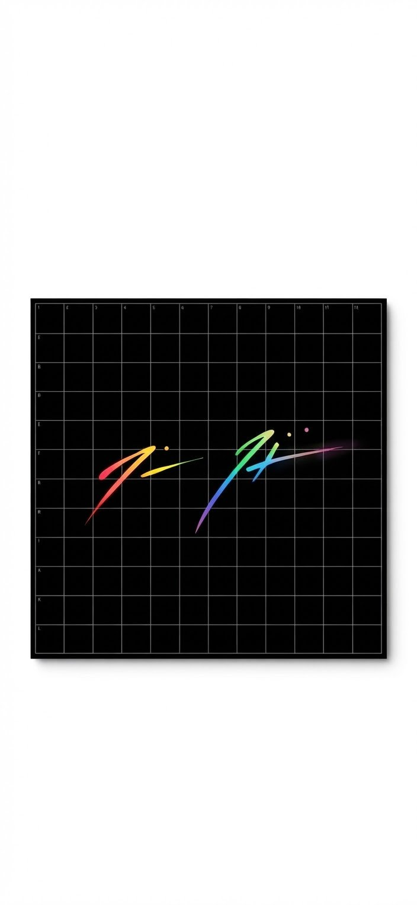
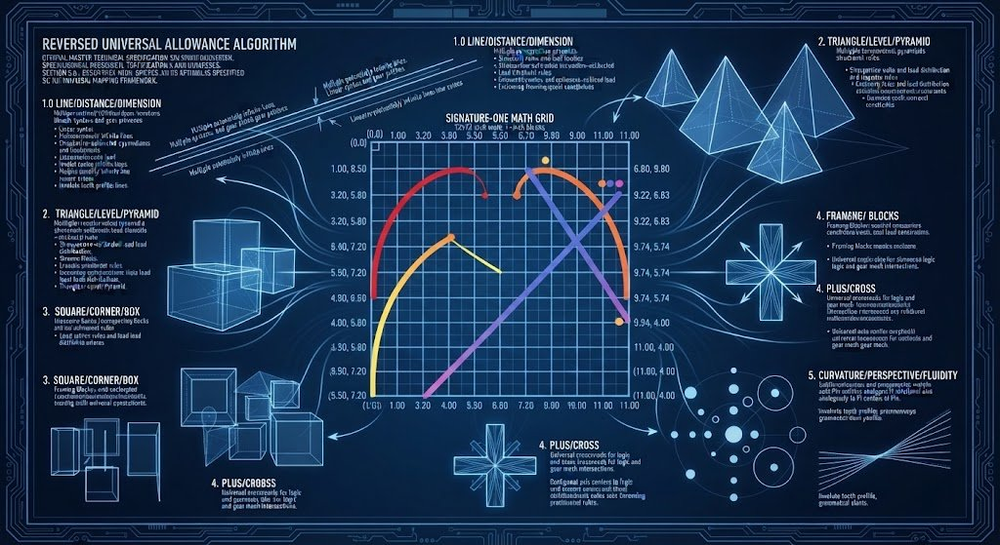

The complete published technical specification documents for the Signature-One system — the signature source math grid, the geometry specification, and the universal allowance algorithm.
Published by Manon · 2026
Document 1 of 4
OFFICIAL SIGNATURE SOURCE MATH GRID
100% A Deterministically Recreatable Sign

Official reference mark — the Signature on the 12″ × 12″ signature source math grid.
INTRO DETERMINISTICALLY SOLVED SIGNATURE
The Signature Concept:
This math grid is the original identity source for The Signature-Line boundless Product-Line ecosystem. The mark in the grid is solved as a mathematical object. It may be used as-is, including as art, and it may also be converted into any official data system as the unit "1," and only after converting Signature to data of the form needed, then used as the stable reference beneath each application.
The Signature Looks:
Each glyph is built the same way: an arc, then a line, then dots on top.
The left glyph is a wide, upside-down checkmark (the arc), followed by a flattened line with a slight bend forming a thin tail pointing right, with one small dot floating directly above the tail line's center.
The right glyph starts with the same arc, slightly larger, followed by its own longer line (the main diagonal). A short cross-stroke intersects the diagonal near its start. Two small dots hover above the diagonal's center-most point.
Pressure Backed Color Coded Rainbow Signature:
The left glyph's arc begins with a firm red base, transitions to orange at the apex, then tapers into the tail line as a fine yellow. The right glyph's arc follows the same color logic, slightly larger. Its line (the main diagonal) starts with heavy blue-purple pressure at the bottom-left, ascending to a fine pink tip at the top-right. The cross-stroke is applied last, intersecting the diagonal, followed by all three dots at the very end: one yellow-orange dot above the left glyph's tail, and two paired dots above the right glyph's diagonal.
THE SIGNATURE-GRID MATH
Official Signature reference mark
OFFICIAL REFERENCE / PRESERVED
Signature Math Grid
12" x 12" - 1" blocks - origin (0,0) top-left - 56 px/in
GRID FOUNDATION
Image: 12" x 12" / 1 foot x 1 foot / 1:1
Grid blocks: 1 inch blocks
Origin: (0,0) at top-left
Grid scale: 56 px/inch
Opacity: 100%
SEGMENT 1 / ARC
Start (1.00, 8.50)
Apex (3.20, 5.80)
Leg A length 3.48 in
Leg A angle 50.83 deg above horizontal
Vertex angle 97.84 deg
Sagitta 2.04 in
Circumradius 2.36 in
Width start / belly / end: 0.08 in / 0.35 in / 0.05 in
SEGMENT 1 / LINE
Start (3.20, 5.80), the apex
End (5.50, 7.20)
Length 2.69 in
Angle 31.33 deg below horizontal
Trace length of arc plus line: 6.18 in
Net displacement 4.68 in
Net angle 16.11 deg above horizontal
SEGMENT 1 / DOT
Center (4.35, 4.80)
Diameter 0.22 in
Height above line 1.70 in
Placement: directly above the line's center
SEGMENT 2 / ARC (derived: Segment 1 arc scaled 1.10x, start placed on diagonal start)
Start (6.80, 9.80)
Apex (9.22, 6.83)
End (11.75, 8.37)
Leg A length 3.83 in
Leg A angle 50.83 deg above horizontal
Leg apex to end 2.96 in
Leg C angle 31.33 deg below horizontal
Vertex angle 97.84 deg
Trace length 6.80 in
Width start / belly / end: 0.09 in / 0.39 in / 0.06 in
SEGMENT 2 / LINE (main diagonal)
Start (6.80, 9.80)
End (11.00, 4.00)
Length 7.16 in
Delta x 4.20 in
Delta y -5.80 in
Angle from horizontal 54.09 deg
Slope -1.38
Width start / mid / end: 0.50 in / 0.28 in / 0.05 in
Curvature: essentially straight
Taper: thick at bottom, fine point at top-right
SEGMENT 2 / CROSS-STROKE
Start (9.74, 5.74), on the main line at t = 0.70
End (8.30, 7.90)
Length 2.60 in
Delta x -1.44 in
Delta y 2.16 in
Angle below horizontal 56.31 deg
Slope magnitude 1.50
Acute / obtuse angles: 2.22 deg / 177.78 deg
Width start / end: 0.30 in / 0.05 in
Correction record: start moved onto main line so the strokes truly cross
SEGMENT 2 / DOTS
Centers (8.60, 4.20) and (9.40, 4.20)
Diameter 0.18 in each
Center spacing 0.80 in
Midpoint (9.00, 4.20)
Distance to intersection 1.71 in
Placement: horizontally aligned above-left of the intersection
DERIVED GEOMETRY
Segment 1 bounds: x[1.00-5.50], y[5.80-8.50]
Segment 1 dimensions: 4.50 x 2.70 in
Segment 2 arc bounds (derived): x[6.80-11.75], y[6.83-9.80]
Segment 2 arc dimensions (derived): 4.95 x 2.97 in
Segment 2 line bounds: x[6.80-11.00], y[4.00-9.80]
Segment 2 line dimensions: 4.20 x 5.80 in
Cross-stroke bounds: x[8.30-9.74], y[5.74-7.90]
Cross-stroke dimensions: 1.44 x 2.16 in
Whole-mark bounds (updated for derived arc): x[1.00-11.75], y[4.00-9.80]
Whole-mark dimensions (updated for derived arc): 10.75 x 5.80 in
Gap between segments: 1.30 in horizontal (endpoint-to-endpoint distance approx 2.91 in)
Total dots: 3
RECONSTRUCTION ORDER / OFFICIAL
Draw a 12" x 12" grid with 1" blocks and mark (0,0) at top-left. Draw Segment 1 arc from (1.00, 8.50) to apex (3.20, 5.80), then its line from the apex to (5.50, 7.20). Draw Segment 2 arc from (6.80, 9.80) through apex (9.22, 6.83) to (11.75, 8.37). Draw the main diagonal from (6.80, 9.80) to (11.00, 4.00). Draw the cross-stroke from the main line at (9.74, 5.74) to (8.30, 7.90). Place all three dots last: (4.35, 4.80), (8.60, 4.20), (9.40, 4.20).
MATH-GRID TO IMAGE CORRESPONDENCE
Element
Coordinates
Visible in image
Segment 1 arc start
(1.00, 8.50)
Red base, lower-left
Segment 1 arc apex
(3.20, 5.80)
Peak of yellow/orange curve
Segment 1 line end
(5.50, 7.20)
Thin yellow tail, mid-right of left mark
Segment 1 dot
(4.35, 4.80)
Small dot above tail line
Segment 2 arc (derived)
(6.80, 9.80) / (9.22, 6.83) / (11.75, 8.37)
Curve of the right mark, before the diagonal
Segment 2 line start
(6.80, 9.80)
Blue/purple base of right stroke
Segment 2 line end
(11.00, 4.00)
Pink tip, far right
Cross-stroke
(9.74, 5.74) to (8.30, 7.90)
The crossing on the right mark
Segment 2 dots
(8.60, 4.20), (9.40, 4.20)
Two dots above right mark
Conclusion: Segment 1 and the Segment 2 line, cross-stroke, and dots are original measured values. The Segment 2 arc values are derived from the Segment 1 arc scaled 1.10x and can be swapped if you have measured values.
Document 2 of 4
THE SIGNATURE-GEOMETRY-ONE SPECIFICATION AND THE SIGNATURE SYSTEM ARCHITECTURE
The Signature-Geometry-One (SG1) specification defines the master geometric and architectural framework for the Signature ecosystem. Functioning simultaneously as a gridded legal signature, an advanced barcode, a photographic profile, and an echolocation mapping grid, the system serves as the Auto-Pen Signature of The Creator. It encodes infinite structural patterns across every known coding language and seeming blank space, establishing a universally dynamic universal-bit starter, mapper, tracker, and ping when unlocked within the math grid.
THE SIGNATRE BY LOOKS AND GEOMETRY
The Signature is a Signature. And yet like an advanced form of Bar Code or like a Photo or Ecolocation, there is all the dynamics of a gridded legal Signature. The Auto-Pen Signature of The Creator, if you will. But there is also encoded in all those dynamic, infinite other codes in every known coding language, even in seemed lack (Blank). To unlock the Signature in the math grid is to actually create a universally dynamic universal-bit (a binary [or whatever code] starter [mapper/tracker/ping])
The Measuring Tools:
Line/Distance/Dimension
Triangle/Level/Pyramid
Square/Corner/Box
Plus/Cross/Crossroads
Circle/Dot/Ball
Curvature/Perspective/Fluidity
The Vast and Often Abstract Signature Arcutecture Explained in Human Real-World made Perfect-Way:
The Key Signature "Line/Distance/Dimension" stoke can be found directly after the First 7 shaped ark then again even continued after the Second 7 shaped ark, but this time the line found dirrectly after the Plus/Cross sign (even sign to perspective/chance, there maybe not, creation/destruction able) found dirrectly after the 7 shape. The Two Lines are both or together potentially infinite (size hither thither even number hither thither) even covering Universe(s) made with Line/Lines while both even as one are optionally set to perspective to account to account for chance, and same time the slant covers fact human-made with imperfections. Also, given the way drawn, the human element, one could say there and/or not even maybe, and or in process of creation (drawing) even destruction (erasing) able. Also, given the way drawn, the human element, one could say there and/or not even maybe even in process of creation (drawing) even destruction (erasing) able, a sign (even set) with own infinity.
The Key Signature "Triangle/Level/Pyramid" stoke can be found at the very beginning of the First Name at the 7 shape apex then again even continued at the beginning of the Second Name at the Second 7 shape apex. The Two Triangles are both Together potentially infinite (size hither thither even number hither thither) even covering Universe(s) made with Triangle/Triangles while both even as one are potentially set to perspective to account for chance, and same time the slant covers fact human-made with imperfections. Also, given the way drawn, the human element, one could say there and/or not even maybe even in process of creation (drawing) even destruction (erasing) able, a sign (even set) with own infinity.
The Key Signature "Square/Corner/Box" stroke can be found again at the very beginning of the First Name at the 7 shape apex then again even continued at the beginning of the Second Name at the Second 7 shape apex. The two Squares in same location as Triangles to double confirm are both together potentially infinite (size hither thither even number hither thither) even covering Universe(s) made with Square/Squares while both even as one are potentially set to perspective to account for chance, and same time the slant covers fact human-made with imperfections. Also, given the way drawn, the human element, one could say "there" and/or "not" even "maybe" even "in process of creation" (drawing) even "process of destruction" (erasing) able, a sign (even set) with own Infinity.
The Signature "Plus/Cross" stroke can be found dirrectly after the Seconds 7 ark shape and before the Second Line. The Plus sign is potentially infinite even as a Cross is potentially infinite (size hither thither even number hither thither) even covering Universe(s) made with Plus/Cross/Crossroads while one even as many potentially set to perspective for chance, and same time the slant covers fact human-made with imperfections. Also, given the way drawn, the human element, one could say "there" and/or "not" even "maybe" even "in process of creation" (drawing) even "process of destruction" (erasing) able, a (even set) sign with own Infinity.
The Key Signature "Circle/Dot/Ball" stroke can be found in the Constillation/Orbit/Sequence of "..." ascending above the other symbols in to fro matrix to sSignature made (dot The 'I's). The sign "..." even as Pi or Phi is a mathematically valid way to express ever increasing cascading abilities, and in this case "connect the dot infinity" to "art universe made with dots infinity" if not morse code or static even starts and suns ... (size hither thither even number hither thither) even covering Universe(s) made with Circles while all three even as one are potentially set to perspective to account for chance, and same time the slant covers fact human-made with imperfections. Also, given the way drawn, the human element, one could say "there" and/or "not" even "maybe" even "in process of creation" (drawing) even "process of destruction" (erasing) able, a (even set) sign with own Infinity.
The Signature "Curvature/Perspective" stroke can be found in each and all spaces and angles even overall gramitical slant. The Curvature even as Perspective or Distance is a mathematically valid way to express infinity and in this case "black hole infinity" to "relativity infinity" (size hither thither even number hither thither) even covering Universe(s) made with Curvatures while in every instance even as one the warp potentially set to perspective to account for chance, and same time the slant covers fact human-made with imperfections. Also, given the way drawn, the human element, one could say "there" and/or "not" even "maybe" even "in process of creation" (drawing) even "process of destruction" (erasing) able, a (even set) sign with own Infinity.
In a deeper look, the Signature accounts for all the above but also more. The Signature accounts for the seprate Infinity in size and number even seemed lack, in relation to Line and/or Triangle/Pyramid and/or Square/Box and/or Plus/Cross even Curvature/Perspective, but likewise mixes amid, even in seemed lack. It also accounts for the infinity of all shapes in one infinitely able, even in seemed lack, in size and number. All this when fully controlled as reduced to my legal Signature as boundless ecosystem made by creator (owner). An interesting take away is that every is infinite able but drawable in a real world valid math acceptible way, to unite math and science and...
The Signature Art witn Math/Geometry Explained:
Under that framework, the same mathematically expressed artwork can resolve differently depending on the criterion being measured. For example:
1 — identity/unit/reference state
0 — absence/null state where the defined criteria produce it
∞ — unbounded/infinite state where the criteria permit or resolve to infinity
Triangle — when the measured relationships resolve as a triangular structure
Square — when they resolve as a square/corner structure
Line — when the relevant measurement resolves to a line/dimension
Circle/Dot — when the relevant measurement resolves to that structure
Curvature/Perspective — when the measured geometry resolves through curvature or perspective
So the art itself is mathematically expressible, while the mathematical result is determined by the measurement criteria applied to the particular instance. That is consistent with the six-tool architecture in your SG1 specification. The document explicitly defines those six tools as the foundational measurement framework and gives each an independent operational role (mixable).
0.0 EXECUTIVE SUMMARY
The SG1 specification establishes the operational parameters for translating a master legal signature into a universally dynamic binary or code starter. By organizing the glyph into six canonical measuring tools—Line, Triangle, Square, Plus/Cross, Circle/Dot, and Curvature—the system bridges absolute mathematical validity with human-scale creation and destruction. Every geometric element is calibrated to handle universal-scale infinity while accounting for human perspective, chance, and manual execution.
1.0 CANONICAL MEASURING TOOLS FRAMEWORK
1.1 Core Measurement Instruments
Structural Array: The spatial matrix is mapped through six foundational dimensional tools: Line/Distance/Dimension, Triangle/Level/Pyramid, Square/Corner/Box, Plus/Cross/Crossroads, Circle/Dot/Ball, and Curvature/Perspective/Fluidity.
Dual Functionality: Each tool operates as an independent infinity in size and number while maintaining real-world math-acceptable drawability.
2.0 DETAILED COMPONENT SPECIFICATIONS
2.1 Line / Distance / Dimension Component
Spatial Placement: Positioned directly after the first 7-shaped arc, and subsequently continued after the second 7-shaped arc following the plus/cross sign.
Operational Parameters: Configured as potentially infinite lines spanning universe scales, set to perspective for chance, with stroke slants encoding human-made imperfections, drawing creation, and erasing destruction.
2.2 Triangle / Level / Pyramid Component
Spatial Placement: Located at the apex of the first 7-shaped arc and continued at the beginning of the second name at the second 7-shaped apex.
Operational Parameters: Built as universal-scale infinite triangles calibrated with perspective to manage random chance and human manual execution, including both creation and destruction states.
2.3 Square / Corner / Box Component
Spatial Placement: Co-located precisely at the 7-shape apexes alongside the triangles to provide double-confirmation of spatial boundaries.
Operational Parameters: Shares infinite multi-universal scaling capabilities while tracking active human creation and destruction processes within the grid matrix.
2.4 Plus / Cross / Crossroads Component
Spatial Placement: Positioned directly after the second 7-shaped arc and preceding the second terminal line.
Operational Parameters: Functions as a potentially infinite plus sign or cross serving as a multi-directional universal crossroads set to perspective for chance, imperfection, and execution.
2.5 Circle / Dot / Ball Component
Spatial Placement: Configured in the constellation, orbit, and sequence of dots (...) ascending above the matrix symbols, corresponding to the dotted "I" structures.
Operational Parameters: Operates analogously to mathematical constants like Pi or Phi to express point-infinity, connecting dot-infinity to art universes made of stellar, morse-code, or static point sequences.
2.6 Curvature / Perspective / Fluidity Component
Spatial Placement: Integrated across all spaces, angles, and the overall grammatical slant of the mark.
Operational Parameters: Acts as a mathematical expression spanning from black hole infinity to relativity-scale infinity, incorporating perspective warps for chance and human execution.
3.0 ECOSYSTEM SYNTHESIS AND BOUNDS
3.1 Multi-Dimensional Integration
Unified Shape Infinity: The architecture accounts for separate infinities in size, number, and seeming lack across all shape categories, mixing them into a unified operational parameter.
Boundless Ecosystem Control: When fully controlled and reduced to a legal signature, the system forms a boundless ecosystem created and owned by the creator, successfully uniting rigorous mathematics, science, and real-world valid execution.
END OF SPECIFICATION
Document 3 of 4
THE SIGNATURE MATH-GRID-ONE
Official Technical Specification
The Signature Math-Grid-One diagram — the six canonical sections mapped onto the math grid.
INTRO: THE SIGNATURE TO ART AND MATH/GEOMETRY ALL CROSSOVER
The Signature Math-Grid is the culmination of The Signature—moving from Signature to Universal dynamics, Geometry, and Math. Hence, The Signature-Math-Grid-One. In layman's terms, Math-Grid-One is where Geometry and Math are solved by a Signature applied relative to a Grid, yet distinguished from the signature's own intrinsic shape boundaries.
The "7" callout is a reference anchor to the arc+line form.
The "A" (and the grid labels) are reference anchors in the math grid.
The SG1 spec and the Signature Math Grid match each other without contradiction.
The case is the same for any referenced shape/mark or character not not mathematically defined.
0.0 EXECUTIVE OVERVIEW
The Signature-One Math Grid is a deterministic signature-identity specification and universal geometric engine.
It functions as a barcode-like identity pattern, photographic geometric reference, echolocation-like spatial pattern, and gridded identity glyph. When placed inside the fixed 12 x 12 math grid, the Signature becomes the canonical geometric source for a Binary-1 identity anchor capable of mapping, tracking, pinging, referencing, and stabilizing systems.
The Signature is physically and abstractly measurable mathematics: its strokes, coordinates, dimensions, angles, intersections, dots, gaps, and curvature are represented as defined geometric data. The original geometry remains the preserved source record.
The complete compilation sequence is: SIGNATURE -> MATH -> CANONICAL GEOMETRIC RECORD
In later material: BINARY-1 IDENTITY -> APPLICATIONS
The Six Defined Measuring Tools:
Line
Triangle
Square / Bounding Domain (Co-located at the apexes of the 7-shaped arcs to confirm spatial boundaries)
Plus / Cross
Circle / Dot
Curvature
0.1 REDUCTION TO ONE (FORMALS)
Presence of any canonical geometric element is classified as Signature-1 (Presence -> 1).
Absence of geometry, including Null Space, is classified as Signature-0 (Absence -> 0).
The Signature reduces to the constant: Signature-One = 1.
Moving or referencing the Signature within valid coordinate systems preserves this constant.
1.0 THE TRIANGLE -- MANUFACTURING THE VOID (NULL SPACE)
Technical Geometry: Produced by the narrow acute intersection (~2.22 degrees) of Segment 2's main diagonal (starting at (6.80, 9.80) and ending at (11.00, 4.00)) and its cross-stroke (starting at (9.74, 5.74) and ending at (8.30, 7.90)).
Unified Meaning: Represents the Null Space / Signature-0 origin concept, acting as the foundational void or reference baseline from which identity presence is defined.
2.0 THE SQUARE -- BOUNDING DOMAIN / FINITE REALITY
Technical Geometry & Differentiation: The external reference environment is the fixed 12 x 12 mathematical grid. However, the signature's own occupied bounding domain is distinct from that grid, measuring an independent whole-mark rectangular block of 10.00 x 5.80 inches spanning bounds x[1.00-11.00], y[4.00-9.80].
Unified Meaning: The square is co-located at the apexes of the 7-shaped arcs (sharing position with the triangles) to double-confirm spatial boundaries and manage perspective, defining the finite universe boundary of the active identity space.
3.0 THE CIRCLE -- DOTS / DISCRETE ANCHORS
Technical Geometry: Contains three fixed circular dot anchors:
Dots 2 & 3 (above Segment 2 intersection): Centers (8.60, 4.20) and (9.40, 4.20), diameters 0.18 inches, with a center spacing of 0.80 inches.
Unified Meaning: Serves as Signature-1 metadata anchors providing stable coordinate lock-points for identity verification.
4.0 THE LINE -- DISTANCE / DIMENSION / EXTENSION
Technical Geometry:
Segment 1 (V/checkmark curve): Starts at (1.00, 8.50), apex at (3.20, 5.80), ends at (5.50, 7.20) (trace length 6.18 inches).
Segment 2 (Primary diagonal): Starts at (6.80, 9.80), ends at (11.00, 4.00) (length 7.16 inches, slope -1.38).
Unified Meaning: Acts as the Linear Infinity Quantifier, establishing extendable directional paths from finite measured segments.
5.0 THE PLUS / CROSS -- CROSSROADS / CHANCE / DIRECTION
Technical Geometry: Formed where the cross-stroke intersects the main diagonal at (9.74, 5.74) and extends to (8.30, 7.90).
Unified Meaning: Acts as the Perspective Infinity Quantifier, establishing a controlled directional junction for branching, scaling, and decision logic.
Technical Geometry: Expressed through the convex-up bow of Segment 1 and the overarching grammatical slant of the mark.
Unified Meaning: Functions as the Flow Engine of the Signature, enabling continuous geometric transition across scale and coordinate shifts.
7.0 ULTIMATE SYNTHESIS -- ALL SHAPES UNIFIED
The six tools (Line, Triangle, Square/Bounding Domain, Plus/Cross, Circle/Dot, Curvature) unite into a single deterministic source. The signature's intrinsic bounding domain (10.00 x 5.80 inches) operates cleanly within the external 12 x 12 coordinate grid framework, preserving the root geometry while supporting boundless downstream application layers (B1-SIG-001).
Document 4 of 4
THE REVERSED UNIVERSAL ALLOWANCE ALGORITHM FOR CREATION, AUTOMATION, AND MULTI-PATH DYNAMICS
Official Master Technical Specification

The Reversed Universal Allowance Algorithm — the six canonical measuring tools in the blueprint framework.
Multifunctional Matrix: Functions simultaneously as a gridded legal signature, an advanced barcode, a photographic profile, an echolocation mapping grid, an automated mechanical gear-ratio blueprint, a software execution state machine, and the Auto-Pen Signature of The Creator.
The Signature is a Signature. And yet like an advanced form of Bar Code or like a Photo or Echolocation, there is all the dynamics of a gridded legal Signature. The Auto-Pen Signature of The Creator, if you will. But there is also encoded in all those dynamic, infinite other codes in every known coding language, shape, size, number, dimension, mechanical gear ratio, automated dynamic movement, and even in seemed lack (Blank). To unlock the Signature in the math grid is to actually create a universally dynamic universal-bit (a binary [or whatever code] starter [mapper/tracker/ping/mechanical motion transmitter]).
The Allowance Principle and Universal Wiggle Room: Because the number line is infinite and the signature encodes infinite structural patterns across every known coding language, shape, size, number, dimension, mechanical linkage, automated dynamic sequence, and seeming blank space (lack), the system inherently acts as a universal allowance bit. When reversed, it solves and targets any tangible human, material, technical, scientific, mechanical, or linguistic need (incorporating symbol systems, programming logic, gear tooth profiles, and grammatical rules like math or English). This ensures that whatever an engineer, builder, programmer, or system needs to make—whether following established old standards or developing entirely new ones—there is complete universal wiggle room and multiple optional pathway solutions available.
1.0 THE SIX CANONICAL MEASURING TOOLS (INFINITE SCALE, LANGUAGE, AUTOMATION, AND HUMAN VARIANCE)
Each tool operates as an independent infinity in size, number, dimension, mechanical movement, and linguistic/symbolic rule structure, covering universes while remaining set to perspective for chance and featuring slants for human-made imperfections, creation (drawing/building/coding), and destruction (erasing/wear):
Line / Distance / Dimension / Linguistic Rules / Linear Gear Pitch
Placement: Positioned directly after the first 7-shaped arc, and continued after the second 7-shaped arc following the plus/cross sign.
Scope: Potentially infinite lines covering universes, incorporating linear syntax, rule-based text spacing, dimensional bounds, linear gear pitch lines, rack-and-pinion movement vectors, perspective, chance, and manual human execution states. Both lines are potentially infinite (size hither thither even number hither thither) covering Universe(s), optionally set to perspective for chance, and accounting for human-made imperfections, creation (drawing), and destruction (erasing).
Placement: Located at the apex of the first 7-shaped arc and at the beginning of the second name's 7-shaped apex.
Scope: Universal-scale infinite triangles calibrated with perspective for hierarchical rule structures, gear tooth load angles, mechanical leverage pyramids, human execution variance, and creation/destruction cycles. Both triangles are together potentially infinite (size hither thither even number hither thither) covering Universe(s), set to perspective for chance, and accounting for human-made imperfections and creation/destruction.
Placement: Co-located at the 7-shape apexes alongside the triangles to double-confirm spatial, mechanical housing, and categorical boundaries.
Scope: Multi-universal scaling boundaries, gearbox casing limits, memory buffer framing, and grammatical framing blocks tracking active human creation, destruction, and finite spatial/conceptual containment. The two squares are in the same location as triangles to double confirm, potentially infinite covering Universe(s), set to perspective for chance, and accounting for human-made imperfections and creation/destruction.
Placement: Positioned directly after the second 7-shaped arc and before the second terminal line.
Scope: Multi-directional universal crossroads set to perspective for chance, symbolic intersection, Boolean software logic operations, mechanical gear mesh engagement points, and execution rules. The plus/cross is potentially infinite covering Universe(s), set to perspective for chance, and accounting for human-made imperfections and creation/destruction.
Placement: Configured in the constellation, orbit, and sequence of dots ascending above the matrix symbols (dotting the I's).
Scope: Operates analogously to mathematical constants like Pi or Phi to express point-infinity, connecting dot-infinity to art universes, rotational gear pitch circles, bearing races, stellar static, and discrete linguistic data nodes. The sign "..." even as Pi or Phi expresses infinity, connecting dot-infinity to art universes, morse code, static, stars, and suns, covering Universe(s), set to perspective for chance, and accounting for human-made imperfections and creation/destruction.
Placement: Integrated across all spaces, angles, mechanical gear tooth curves, and the overall grammatical slant of the mark.
Scope: Acts as a mathematical expression spanning from black hole infinity to relativity-scale infinity with perspective warps, involute gear motion curves, stylistic variations, and interpretive wiggle room. Curvature/perspective in each space and angle covers black hole to relativity infinity, covering Universe(s), set to perspective for chance, and accounting for human-made imperfections and creation/destruction.
2.0 OFFICIAL SIGNATURE SOURCE MATH GRID: 100% A DETERMINISTICALLY RECREATABLE SIGN
This math grid is the original identity source for the Signature-Line boundless Product-Line ecosystem. The mark in the grid is solved as a mathematical object. It may be used as-is, including as art, and it may also be converted into any official data system as the unit "1," and only after converting Signature to data of the form needed, then used as the stable reference beneath each application so that anything can be charted the same way.
The Signature Looks:
Each glyph is built the same way: an arc, then a line, then dots on top.
The left glyph is a wide, upside-down checkmark (the arc), followed by a flattened line with a slight bend forming a thin tail pointing right, with one small dot floating directly above the tail line's center.
The right glyph starts with the same arc, slightly larger, followed by its own longer line (the main diagonal). A short cross-stroke intersects the diagonal near its start. Two small dots hover above the diagonal's center-most point.
Pressure Backed Color Coded Rainbow Signature:
The left glyph's arc begins with a firm red base, transitions to orange at the apex, then tapers into the tail line as a fine yellow. The right glyph's arc follows the same color logic, slightly larger. Its line (the main diagonal) starts with heavy blue-purple pressure at the bottom-left, ascending to a fine pink tip at the top-right. The cross-stroke is applied last, intersecting the diagonal, followed by all three dots at the very end: one yellow-orange dot above the left glyph's tail, and two paired dots above the right glyph's diagonal.
Grid Foundation:
Image: 12 inches by 12 inches / 1 foot by 1 foot / 1:1 scale
Grid blocks: 1 inch blocks
Origin: (0,0) at top-left
Grid scale: 56 pixels/inch
Opacity: 100%
Segment 1 / Arc:
Start: (1.00, 8.50)
Apex: (3.20, 5.80)
Leg A length: 3.48 in
Leg A angle: 50.83 deg above horizontal
Vertex angle: 97.84 deg
Sagitta: 2.04 in
Circumradius: 2.36 in
Width start / belly / end: 0.08 in / 0.35 in / 0.05 in
Segment 1 / Line:
Start: (3.20, 5.80), the apex
End: (5.50, 7.20)
Length: 2.69 in
Angle: 31.33 deg below horizontal
Trace length of arc plus line: 6.18 in
Net displacement: 4.68 in
Net angle: 16.11 deg above horizontal
Segment 1 / Dot:
Center: (4.35, 4.80)
Diameter: 0.22 in
Height above line: 1.70 in
Placement: directly above the line's center
Segment 2 / Arc (derived: Segment 1 arc scaled 1.10x, start placed on diagonal start):
Start: (6.80, 9.80)
Apex: (9.22, 6.83)
End: (11.75, 8.37)
Leg A length: 3.83 in
Leg A angle: 50.83 deg above horizontal
Leg apex to end: 2.96 in
Leg C angle: 31.33 deg below horizontal
Vertex angle: 97.84 deg
Trace length: 6.80 in
Width start / belly / end: 0.09 in / 0.39 in / 0.06 in
Segment 2 / Line (main diagonal):
Start: (6.80, 9.80)
End: (11.00, 4.00)
Length: 7.16 in
Delta x: 4.20 in
Delta y: -5.80 in
Angle from horizontal: 54.09 deg
Slope: -1.38
Width start / mid / end: 0.50 in / 0.28 in / 0.05 in
Curvature: essentially straight
Taper: thick at bottom, fine point at top-right
Segment 2 / Cross-Stroke:
Start: (9.74, 5.74), on the main line at t = 0.70
End: (8.30, 7.90)
Length: 2.60 in
Delta x: -1.44 in
Delta y: 2.16 in
Angle below horizontal: 56.31 deg
Slope magnitude: 1.50
Acute / obtuse angles: 2.22 deg / 177.78 deg
Width start / end: 0.30 in / 0.05 in
Correction record: start moved onto main line so the strokes truly cross
Segment 2 / Dots:
Centers: (8.60, 4.20) and (9.40, 4.20)
Diameter: 0.18 in each
Center spacing: 0.80 in
Midpoint: (9.00, 4.20)
Distance to intersection: 1.71 in
Placement: horizontally aligned above-left of the intersection
Derived Geometry Bounds and Dimensions:
Segment 1 bounds: x[1.00-5.50], y[5.80-8.50]
Segment 1 dimensions: 4.50 x 2.70 in
Segment 2 arc bounds (derived): x[6.80-11.75], y[6.83-9.80]
Segment 2 arc dimensions (derived): 4.95 x 2.97 in
Segment 2 line bounds: x[6.80-11.00], y[4.00-9.80]
Segment 2 line dimensions: 4.20 x 5.80 in
Cross-stroke bounds: x[8.30-9.74], y[5.74-7.90]
Cross-stroke dimensions: 1.44 x 2.16 in
Whole-mark bounds (updated for derived arc): x[1.00-11.75], y[4.00-9.80]
Whole-mark dimensions (updated for derived arc): 10.75 x 5.80 in
Gap between segments: 1.30 in horizontal (endpoint-to-endpoint distance approx 2.91 in)
Total dots: 3
Reconstruction Order / Official:
Draw a 12" x 12" grid with 1" blocks and mark (0,0) at top-left.
Draw Segment 1 arc from (1.00, 8.50) to apex (3.20, 5.80), then its line from the apex to (5.50, 7.20).
Draw Segment 2 arc from (6.80, 9.80) through apex (9.22, 6.83) to (11.75, 8.37).
Draw the main diagonal from (6.80, 9.80) to (11.00, 4.00).
Draw the cross-stroke from the main line at (9.74, 5.74) to (8.30, 7.90).
Place all three dots last: (4.35, 4.80), (8.60, 4.20), (9.40, 4.20).
3.0 THE REVERSED UNIVERSAL ALLOWANCE ALGORITHM FOR MULTI-PATH CREATION, AUTOMATION, AND DYNAMICS
To target allowance for creation—enabling an engineer, builder, programmer, or system to reverse the universal algorithm and solve for anything with maximum flexibility and multiple option paths (from every shape, dimension, symbol, mechanical gear train, and automated dynamic movement to software programming languages, materials, manufacturing means, and scientific theories)—the operational framework functions as follows:
Step 1: Initialize the Universal-Bit Starter
Unlock the master legal signature within the math grid to generate the dynamic binary/code starter, mapper, tracker, mechanical motion transmitter, and ping across all symbolic, automated, and dimensional domains.
Step 2: Reverse-Targeting the Allowance Need and Optional Pathways
Take any required tangible, mechanical, or abstract output (such as a physical object, gear assembly ratio, automated mechanical movement, software program, scientific formula, or linguistic/symbolic rule set) and set it as the target destination on the infinite coordinate number line, allowing the system to evaluate multiple alternative option paths.
Step 3: Reverse-Executing the Combinatorial Mix across All Dimensions, Languages, and Automation Dynamics
Project the target requirement backward through the six canonical measuring tools and the official math grid coordinates, utilizing lines for dimensions, linear gear pitches, and software syntax; triangles/pyramids for structural hierarchies, load distribution, and mechanical leverage; squares/boxes for spatial boundaries, gearbox housings, and rule bounds; plus/cross for branching logic, Boolean operations, and gear mesh intersections; circles/dots for discrete data nodes, bearing axes, and rotational centers; and curvature for relativistic flow, involute gear tooth curves, and stylistic wiggle room.
Step 4: Accounting for Human Variance, Language Rules, Mechanical Tolerance, and Seeming Lack
Factor in perspective, chance, human imperfection slants, gear backlash tolerances, friction coefficients, grammatical/symbolic rule sets, and the active duality of creation (drawing/building/coding) and destruction (erasing/wear/garbage collection). In a deeper look, the Signature accounts for separate infinity in size, number, and seemed lack in relation to all tools, mixing amid and even in seemed lack. It accounts for the infinity of all shapes in one infinitely able, even in seemed lack, in size and number.
Step 5: Output the Multi-Path Solved Reality
Because every shape, dimension, gear ratio, automated dynamic sequence, and language rule is infinite-able yet renderable in a real-world valid math and symbolic acceptable way, the reversed algorithm yields multiple mathematically backed solution paths. When fully controlled as reduced to the legal signature as a boundless ecosystem made by the creator (owner), everything is infinite-able yet drawable and executable in a real-world valid math acceptable way—whether following old standards or developing entirely new ones—to unite math, science, mechanical automation, software science, language, and the creator's boundless ecosystem. (Thinking of the grid as a box, the grid mixes triangles, lines, dots/circles, curvature, and perspective amid all shapes and even seemed lack).